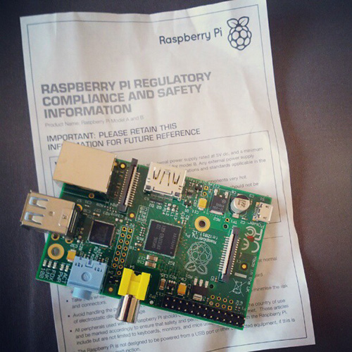
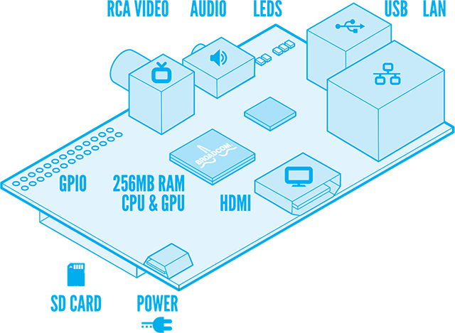

Raspberry Pi, l'ordinateur à bas coût
, Alexis Couronne - [ Electronique ]Aujourd'hui j'ai reçu mon nouveau jouet : un Raspberry Pi.
Pour ceux qui ne connaissent pas encore, Raspberry Pi est un ordinateur à bas coût (environ 30 €), open hardware et de la taille d'une carte de crédit !
Bien entendu les performances ne sont pas celles d'un PC de "pro gamer", mais assez pour pouvoir faire pas mal de trucs assez sympa.

Composition de la carte
Il existe deux versions du Raspberry Pi, je possède la "B". La liste qui suit correspond aux éléments de ce même modèle.
- processeur ARM de 700 MHz
- 256 Mo de RAM
- 2 sorties vidéo : 1 composite (prise jaune RCA) et 1 HDMI
- 1 sortie audio (prise jack 3,5 mm)
- 1 lecteur carte SD (la carte SD fait office de disque dur)
- 2 ports USB 2.0
- 1 port réseau Ethernet
- 1 prise d'alimentation via micro-USB
- des entrées/sorties GPIO (utile pour dialoguer avec un kit Arduino)
- une API logicielle embarquée d'OpenGL ES 2.0

(Diagramme par Paul Beech)
Partie software
Coté système d'exploitation une distribution Linux/Debian (Raspbian “wheezy”) est proposée en téléchargement sur le site officiel de Raspberry Pi. Vous pouvez faire donc tourner tous les logiciels conçus pour Linux sur une architecture ARM.
Pour quelle application ?
De mon coté plein d'idées me viennent en tête : serveur local de backup, un media serveur, une MameCab (borne d'arcade fait-maison basé sur l'émulateur Mame),... Bref ! Il me faut encore réfléchir à mon futur projet avec cette carte et mettre les doigts dans le cambouis pour tester les possibilités de la bête.